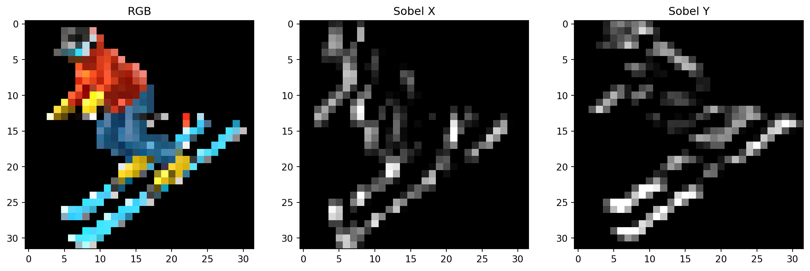

When I first read the distil Neural Cellular Automata paper (Mordvintsev et al. 2020), I was introduced to and intrigued by morphogenesis - the study of how organisms grow and develop. And i though I would try to implement the NCA algorithm in Jax to play around with it.
Perception module
In real-life, only chemical gradients guide organism development. In the perception module, the NCA algorithm takes the input cell states and applies the Sobel operator for each channel in both the x and y directions, which is then concatenated with the original cell state. Where the cell state is a 16 dimension vector, so after the perception module, the cell state is a 48 dimension vector.
Code
import syssys.path.append('NCA')import NCA.nca.model as modelimport NCA.nca.nca as ncaimport cv2import matplotlib.pyplot as pltimport numpy as npemoji_path ='NCA/emoji_imgs/smile.png'img = cv2.imread(emoji_path, -1)# mult by alphaimg_alpha = img[:,:,3] >0img = img[:,:,:3] * img_alpha[:,:,None]img = img.astype(np.uint8)img = cv2.cvtColor(img, cv2.COLOR_BGR2RGB)img = cv2.resize(img, (32,32))kernel_x, kernel_y = nca.create_perception_kernel(input_size=3, output_size=3)# transpose img into CHW img = np.expand_dims(img, axis=0)/255.img_t = img.transpose(0,3,1,2)perceive_out = nca.perceive(img_t, kernel_x, kernel_y) *255# transpose back to NHWCperceive_out = perceive_out.transpose(0,2,3,1).astype(np.uint8) rgb = perceive_out[0,:,:,0:3]sobel_x = perceive_out[0,:,:,3:4]sobel_y = perceive_out[0,:,:,6:7]# Plot the img and the sobel imgs in x and yfig, axs = plt.subplots(1, 3, figsize=(15, 15))axs[0].imshow(rgb)axs[1].imshow(sobel_x[:,:,0], cmap='gray')axs[2].imshow(sobel_y[:,:,0], cmap='gray')# add some captionsaxs[0].set_title('RGB')axs[1].set_title('Sobel X')axs[2].set_title('Sobel Y')plt.show()

The update module
The update module is a simple MLP that acts on the perception vector, it only has 8,000 paramters! The state update rule can be written as:
\begin{align}
\mathbf{S}_{t+1} &= \mathbf{S}_t + \mathbf{U}(\mathbf{S}_t) \Delta t \\
\end{align}
Stochastic update
To mimic the stochasticity of real-life, the update module is applied to the cell state with a probability of p.
Let us visualise this, with p=0.5:
Code
# create a random statep =0.5random_state = np.random.uniform(0., 1., size=rgb.shape[:2]) rgb = np.asarray(rgb)rgb_random_update = rgb.copy()#print(f'random state shape : {random_state.shape}')#print(f'rgb shape : {rgb.shape}')rgb_random_update[random_state < p] = (255, 0, 125)# just draw the random state ontop of the smileyfig, axs = plt.subplots(1, 2, figsize=(15, 15))axs[0].imshow(rgb)axs[1].imshow(rgb_random_update)axs[0].set_title('RGB')axs[1].set_title('RGB with random update p=0.5')plt.show()
A cell is “empty” if all cells in a 3x3 neighbourhood are empty. If a cell is not empty, it is a “living cell”. The update module is only applied to living cells. To do this we can using a max-pooling operation with a window size of 3x3 and stride of 1x1. We can use lax.reduce_window to do this.
import jaxdef max_pool(x, window_shape, strides):# x is HWCreturn jax.lax.reduce_window( x, -np.inf, jax.lax.max, window_strides=strides, window_dimensions=window_shape, padding="SAME" )
Code
# create random living cell statesrandom_living_states = np.random.uniform(0., 1., size=rgb.shape[:2]) print(f'random_living_states : {random_living_states.shape}')#random_living_states_t = random_living_states.transpose(2,0,1)#### apply max pooling to get the living cell states#living_states = max_pool(random_living_states_t, (1,3,3), (1,1,1))#living_states = living_states.transpose(1,2,0)#living_states = np.asarray(living_states).astype(np.uint8)### plot it#fig, axs = plt.subplots(1, 2, figsize=(15, 15))#axs[0].imshow(random_living_states)#axs[1].imshow(living_states)#axs[0].set_title('Random living states')#axs[1].set_title('Max-pooled living states')#plt.show()#